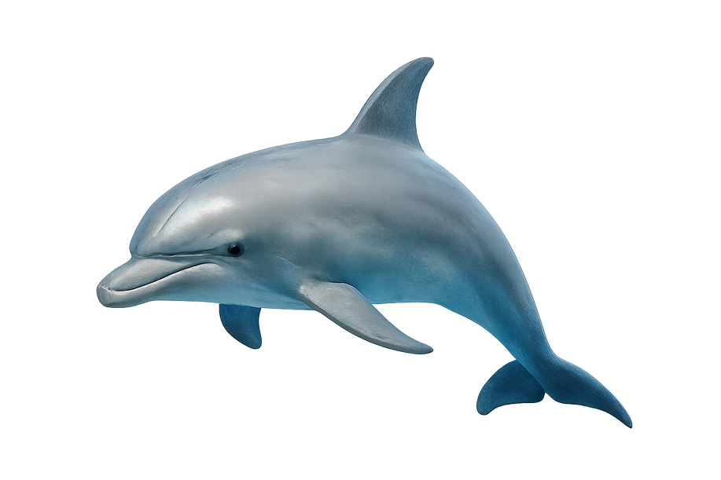
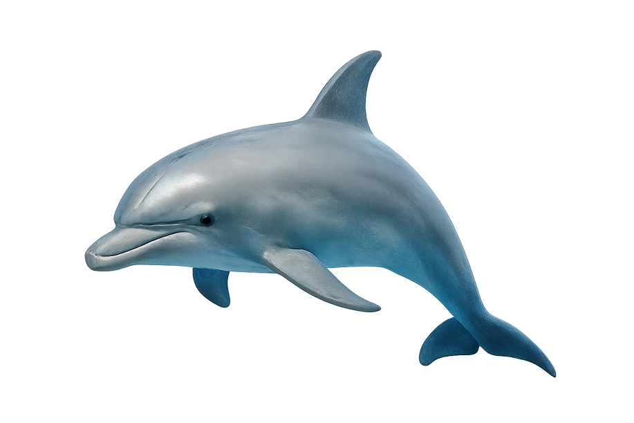
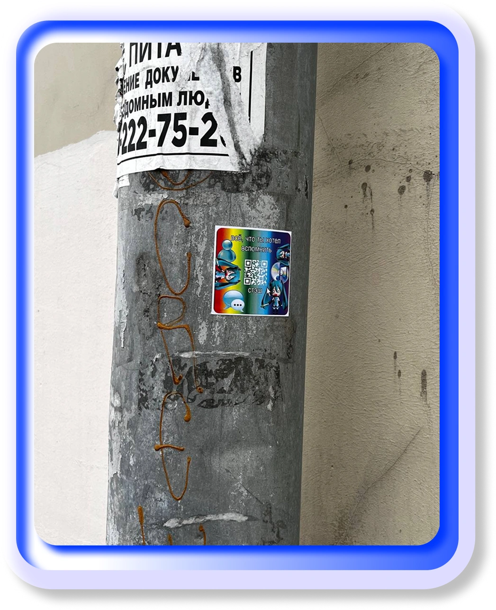
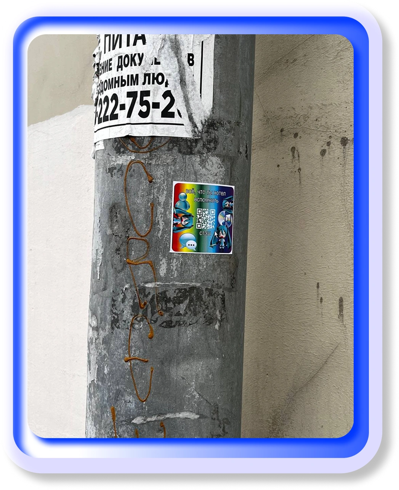

СТЭШ
 


О ПРОЕКТЕ
архив старого интернета. место, в котором собраны артефакты прошлого: сайты, культовые моменты, интерфейсы, игры, гифки, мемы и многое другое. мы собираем фрагменты прошлого и создаем из них портал в мир забытого интернета, чтобы вспомнить, какой была сеть до фильтров, алгоритмов и перенасыщения контентом, и чтобы немного заглянуть туда, куда уже не заходят.
интерактив
архив
просто дикая мусорка
статьи
о нас
Заметка про наш раздел "Архив"
Архив — это сердце нашего проекта и место, где можно пошуршать
в разных артефактах старого интернета. В архиве мы собираем
забытые мемы, странные челленджи тех времен, взломы и забытые
сайты, сохраняя дух эпохи 2000-х. Каждый элемент служит
маленьким фрагментом цифровой истории, который вы больше нигде
не увидите. Архив позволяет путешествовать по прошлому интернету
и сети, открывая случайные находки или забытые ностальгические
мотивы,
с которыми вы уже сталкивались в старой сети интернет.

НАЧНИ ИГРАТЬ СЕЙЧАС
тесты
игры


 
